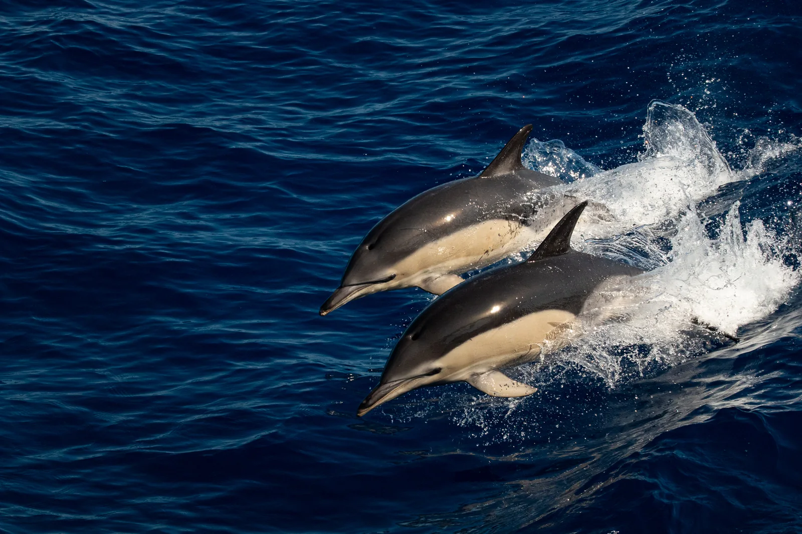

CETACEAN BEHAVIOUR · ACOUSTICS · CONSERVATION
Lorena Vidal
Marine biologist
I am fascinated by how whales communicate, learn and live together.
My interests centre on cetacean communication, social relationships and culture. I would like to combine acoustic analysis with observations of identified individuals to study how vocal behaviour varies with social context.
HOW I GOT HERE
A path back to
marine research.
My route has taken me from ecology at McGill to Development Studies at Cambridge and biodiversity-impact work at Oxford. IMBRSea brought me back to marine research, with a focus on cetacean behaviour and acoustics.
A few things I have worked on
Open a project to explorePlaces behind the projects
Select a location to explore the workScroll to zoom · drag to move · dashed line: AMIGOS survey (schematic) · Natural Earth
Skills in practice
Click to see the project behind each skillThe route so far
Education, research and time in the field · 2017–2026Field and research photographs taken by me or alongside collaborators.
Analysis
Sea Operations
Training for work in the field
Selected qualifications & certificationsVessel & safety training
Small Powerboat & RIB Master · IYT
STCW Personal Survival Techniques · MCA
Security Awareness for Seafarers
Diving
PADI Advanced Open Water Diver
Scientific diving experience in ecological surveys and seagrass restoration.
Additional certifications
EASA Open A1/A3 certificate · theory exam
Canadian driving licence